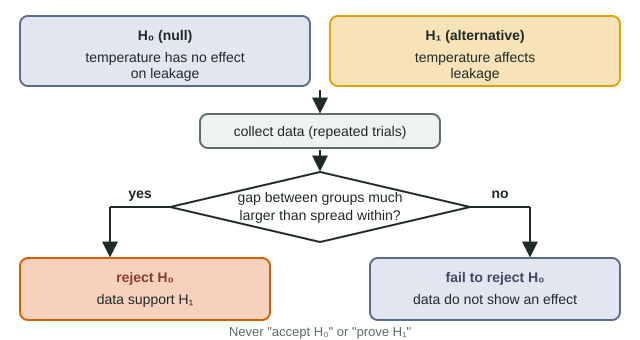

Null and alternative hypotheses
A null hypothesis states that the independent variable has no effect; the alternative states that it does (optionally in a named direction).
Part 1 · Hook
Why this matters
Heat beet cubes and the water around them turns red. Heat them a little and it turns slightly pinker, or does it? Four cubes at 20 °C and four at 40 °C give means of 0.08 and 0.09. Is that a real effect or luck? Science answers with a careful double negative: assume no effect, then ask whether the data are too extreme for that to be believable.
Part 2 · Before you start
What this builds on
Part 3 · Prerequisite check
Quick check before you start
1. What keeps the red substance inside a healthy beet cell?
- A membrane: a phospholipid bilayer whose hydrophobic interior blocks water-soluble substances
- The cell wall, which is waterproof and keeps all liquids in
- Hydrogen bonds between the red substance and the cytoplasm
Show the answer
The plasma membrane's hydrophobic core keeps water-soluble molecules from crossing freely; damage to it lets them leak.
- Correct: A membrane: a phospholipid bilayer whose hydrophobic interior blocks water-soluble substances:
- The cell wall, which is waterproof and keeps all liquids in:
- Hydrogen bonds between the red substance and the cytoplasm:
2. In an if-then prediction, which variable goes after "if"?
- The independent variable
- The dependent variable
- A controlled variable
Show the answer
"If [the independent variable changes this way], then [the dependent variable will respond this way]."
- Correct: The independent variable:
- The dependent variable:
- A controlled variable:
Part 4 · See it
See it first

Part 5 · Step by step
How it works, step by step
- Measurements vary by chance even when nothing is changed.Two groups will almost never have exactly the same mean, so a difference alone proves nothing.
- You state the null hypothesis: temperature has no effect on leakage.The null predicts that any difference between groups will be about as small as chance variation.
- You collect data and compare the gap between groups with the spread within groups.At 20 vs 40 °C the gap (0.01) is smaller than the spread (0.06); at 20 vs 80 °C the groups do not even overlap.
- A gap far larger than chance variation is unlikely if the null were true.You reject the null hypothesis, and the data support the alternative.
- A gap no bigger than chance variation is just what the null predicts.You fail to reject the null: the data do not show an effect, though a small one could still exist.
Part 6 · Key ideas
Key ideas
- Worked example. Question: does heating temperature affect leakage from beet? H₀: heating temperature has no effect on leakage. H₁: heating temperature affects leakage (directional: higher temperature increases leakage). 20 vs 80 °C: no overlap, reject H₀. 20 vs 40 °C: heavy overlap, fail to reject H₀.
- The null hypothesis says no effect, no difference, no relationship. The alternative says there is one, with or without a direction.
- The only two decisions are reject or fail to reject the null. Never write "accept the null" or "prove the hypothesis".
- Failing to reject is not the same as showing there is no effect: a small effect, few repeats or noisy data can hide a real difference.
Part 7 · Misconception
A common mistake
The wrong idea: If an experiment fails to reject the null hypothesis, it has proved the independent variable has no effect.
What actually happens: It shows only that this experiment did not detect an effect. A small effect, too few repeats or high variability could hide one. That is why the phrase is "fail to reject", not "accept".
Part 8 · Check yourself
Check yourself
Exam-style questions. Anything you miss goes into your review queue.
Data table
Heat and red color leaking from beet
Beet cells store a red, water-soluble substance inside a membrane-bound sac, so normally little of it escapes. A student heated identical beet cubes in water for 1 minute at four temperatures, moved each to 10 mL of room-temperature water for 20 minutes, and measured how red the water became (absorbance; higher means redder). There were four cubes per temperature.
| Heating temperature (°C) | Absorbances of four cubes (arbitrary units) | Mean | Range |
|---|---|---|---|
| 20 | 0.05, 0.09, 0.07, 0.11 | 0.08 | 0.06 |
| 40 | 0.06, 0.12, 0.08, 0.10 | 0.09 | 0.06 |
| 60 | 0.41, 0.52, 0.47, 0.44 | 0.46 | 0.11 |
| 80 | 0.88, 0.95, 0.81, 0.92 | 0.89 | 0.14 |
1. Which is the null hypothesis for this experiment?
- The heating temperature has no effect on how much red color leaks from beet cubes.
- Heating beet cubes to higher temperatures increases how much red color leaks out.
- Beet cubes heated to 80 °C will turn the water redder than cubes heated to 20 °C.
- Heat damages the membranes of beet cells, which lets the red substance escape into the water.
Show the answer
A null hypothesis states that the independent variable (temperature) has no effect on the dependent variable (leakage): any differences are due to chance.
- Correct: The heating temperature has no effect on how much red color leaks from beet cubes.: Correct: no effect.
- Heating beet cubes to higher temperatures increases how much red color leaks out.: This is an alternative hypothesis with a direction.
- Beet cubes heated to 80 °C will turn the water redder than cubes heated to 20 °C.: This is a prediction for two specific groups.
- Heat damages the membranes of beet cells, which lets the red substance escape into the water.: This is a proposed explanation of the effect, not a null hypothesis.
2. Compare the 20 °C and 40 °C groups. What is the best decision about the null hypothesis for these two groups?
- Fail to reject it: the means differ by 0.01, much less than the spread among cubes in either group.
- Reject it: the 40 °C mean is higher than the 20 °C mean, so heating to 40 °C increased the leakage.
- Accept it: the data prove that heating from 20 °C to 40 °C has no effect on the beet membranes.
- Reject it: the four 40 °C values include the highest single reading of the two groups, 0.12.
Show the answer
The values overlap almost completely (0.05-0.11 and 0.06-0.12), and the 0.01 gap in means is far smaller than the 0.06 range within each group, so chance could easily produce it.
- Correct: Fail to reject it: the means differ by 0.01, much less than the spread among cubes in either group.: Correct: the difference is no bigger than chance variation.
- Reject it: the 40 °C mean is higher than the 20 °C mean, so heating to 40 °C increased the leakage.: Any two means differ a little; a difference must be larger than the variation within groups to count.
- Accept it: the data prove that heating from 20 °C to 40 °C has no effect on the beet membranes.: Data never prove "no effect"; a small effect could exist that four cubes cannot detect.
- Reject it: the four 40 °C values include the highest single reading of the two groups, 0.12.: One high value is within the normal spread; it is not evidence of a real difference.
3. Compare the 20 °C and 80 °C groups. What is the best decision?
- Reject the null hypothesis: every 80 °C value is far above every 20 °C value, too large a gap to blame on chance.
- Fail to reject the null hypothesis: four cubes per group is too few to reach a decision about any difference in leakage.
- Reject the alternative hypothesis: the 80 °C results are more spread out, so they are less reliable.
- Prove the alternative hypothesis: the difference shows that heat causes leakage in beets of any variety or age.
Show the answer
The lowest 80 °C value (0.81) is about seven times the highest 20 °C value (0.11). A gap that large, with no overlap, is very unlikely to arise by chance.
- Correct: Reject the null hypothesis: every 80 °C value is far above every 20 °C value, too large a gap to blame on chance.: Correct: reject the null; the data support the alternative.
- Fail to reject the null hypothesis: four cubes per group is too few to reach a decision about any difference in leakage.: Small samples can still show a clear difference when the gap is huge compared with the spread.
- Reject the alternative hypothesis: the 80 °C results are more spread out, so they are less reliable.: A slightly larger range does not cancel a difference this large.
- Prove the alternative hypothesis: the difference shows that heat causes leakage in beets of any variety or age.: Data support a hypothesis; they do not prove it for every case.
4. Which explanation best accounts for the leakage above 40 °C?
- Heat disrupts the membrane: the bilayer becomes more fluid and membrane proteins unfold, opening gaps the red substance escapes through.
- Heat makes the red substance evaporate from the cells, and it then dissolves back into the water around the cubes.
- Heat makes the cell walls of the beet shrink, which squeezes the red substance out through the intact membranes.
- Heat causes the beet cells to make more of the red substance, so the same undamaged membranes release a larger amount of it into the water.
Show the answer
Membranes are phospholipid bilayers held together by weak hydrophobic interactions, studded with proteins whose shape depends on weak bonds. High temperature loosens the bilayer and denatures the proteins, so the barrier fails and the water-soluble red substance escapes.
- Correct: Heat disrupts the membrane: the bilayer becomes more fluid and membrane proteins unfold, opening gaps the red substance escapes through.: Correct: a disrupted barrier lets the substance out.
- Heat makes the red substance evaporate from the cells, and it then dissolves back into the water around the cubes.: The substance is dissolved in water inside the cells; it does not evaporate in 1 minute of heating.
- Heat makes the cell walls of the beet shrink, which squeezes the red substance out through the intact membranes.: Squeezing would not explain a jump in leakage; the membranes are the barrier that fails.
- Heat causes the beet cells to make more of the red substance, so the same undamaged membranes release a larger amount of it into the water.: One minute of heat does not make cells produce more substance; a damaged cell is not making anything.
Experimental setup
Does cholesterol change membrane fluidity?
A team made artificial membranes from the same phospholipids, with and without added cholesterol. At 10 °C they measured how fast a labeled lipid moved sideways within the membrane: faster sideways movement means a more fluid membrane. Six membranes of each type were tested.
Results: without cholesterol, mean 2.1 µm²/s (individual values 1.9 to 2.3); with cholesterol, mean 2.9 µm²/s (individual values 2.7 to 3.1).
5. Which pair correctly states the null and alternative hypotheses for this experiment?
- H₀: adding cholesterol has no effect on membrane fluidity at 10 °C. H₁: adding cholesterol changes membrane fluidity at 10 °C.
- H₀: adding cholesterol makes membranes less fluid at 10 °C. H₁: adding cholesterol makes membranes more fluid at 10 °C.
- H₀: cholesterol changes membrane fluidity at 10 °C. H₁: cholesterol has no effect on membrane fluidity at 10 °C.
- H₀: membranes are fluid at 10 °C. H₁: membranes are solid at 10 °C whether or not they contain cholesterol.
Show the answer
The null says the independent variable (cholesterol) has no effect on the dependent variable (fluidity); the alternative says it does.
- Correct: H₀: adding cholesterol has no effect on membrane fluidity at 10 °C. H₁: adding cholesterol changes membrane fluidity at 10 °C.: Correct.
- H₀: adding cholesterol makes membranes less fluid at 10 °C. H₁: adding cholesterol makes membranes more fluid at 10 °C.: Both statements claim an effect; neither is a "no effect" null.
- H₀: cholesterol changes membrane fluidity at 10 °C. H₁: cholesterol has no effect on membrane fluidity at 10 °C.: This swaps the two.
- H₀: membranes are fluid at 10 °C. H₁: membranes are solid at 10 °C whether or not they contain cholesterol.: Neither statement is about the independent variable, cholesterol.
6. What decision do the results support?
- Reject the null hypothesis: the two groups do not overlap, and the difference in means is large compared with the spread.
- Fail to reject the null hypothesis: cholesterol is known to stiffen membranes, so this result is a mistake.
- Accept the null hypothesis: both groups of membranes were fluid, so cholesterol made no difference.
- Fail to reject the null hypothesis: six membranes per group are too few to support any decision about the effect of cholesterol.
Show the answer
Without cholesterol the values run 1.9-2.3; with cholesterol 2.7-3.1. No overlap and a 0.8 µm²/s gap against ranges of 0.4 make chance an unlikely explanation.
- Correct: Reject the null hypothesis: the two groups do not overlap, and the difference in means is large compared with the spread.: Correct.
- Fail to reject the null hypothesis: cholesterol is known to stiffen membranes, so this result is a mistake.: Data are judged on what they show. At low temperature cholesterol keeps phospholipids from packing tightly, which raises fluidity; there is no reason to dismiss the result.
- Accept the null hypothesis: both groups of membranes were fluid, so cholesterol made no difference.: A null hypothesis is never accepted, and here the groups clearly differ.
- Fail to reject the null hypothesis: six membranes per group are too few to support any decision about the effect of cholesterol.: Six per group is enough when the groups do not overlap at all.
7. For the comparison to test the null hypothesis fairly, which factors had to be the same for both kinds of membrane?
- The kind of phospholipid and the temperature
- The amount of cholesterol in each membrane
- The speed at which the labeled lipid moved sideways
- The number of membranes, which could differ freely between the groups
Show the answer
Only the independent variable (cholesterol) should differ. The phospholipids and the 10 °C temperature both affect fluidity, so they must be controlled.
- Correct: The kind of phospholipid and the temperature: Correct: both affect fluidity, so both are controlled.
- The amount of cholesterol in each membrane: Cholesterol is the independent variable; it is the one factor meant to differ.
- The speed at which the labeled lipid moved sideways: Sideways speed is the dependent variable, the measured result.
- The number of membranes, which could differ freely between the groups: Equal numbers of repeats are good practice, but the phrase "could differ freely" ignores that both groups had six; the factors that must match are those that affect fluidity.
Part 9 · Summary
Summary
A null hypothesis states that the independent variable has no effect; the alternative states that it does (optionally in a named direction). Because measurements vary by chance, you judge a difference against the variation within groups. A difference much larger than that variation leads you to reject the null; otherwise you fail to reject it. Data support or fail to support hypotheses; they never prove them, and a null is never accepted.
Part 10 · Up next
What comes next
Part 11 · Connections